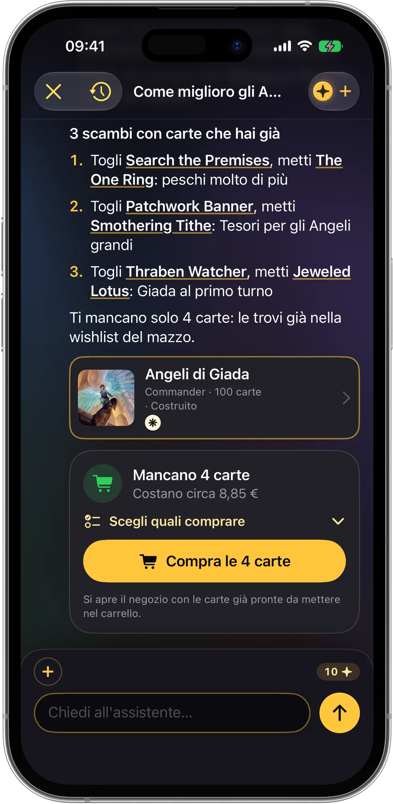

L'app per Magic che conosce le tue carte
Scansiona la tua collezione di Magic: The Gathering, scopri quanto vale, costruisci mazzi Commander con le carte che hai già e segna ogni partita. Mote, il tuo esperto AI, risponde partendo dalle tue carte.
Presto disponibilesull'App StoreDownload gratuito · iPhone e iPad · iOS 18 o successivo
- Scanner di carte
- Contapunti Commander
- Regole offline
- Gioca con gli amici
- 14 lingue
- Sincronizzazione iCloud

ManaPal in azione
Collezione, mazzi e partite in un'unica app gratuita
Basta fogli di calcolo, tre app diverse e la penna per i punti vita. ManaPal tiene tutto insieme, e il suo assistente guarda le tue carte prima di rispondere.
Presto disponibilesull'App Store
- Scansiona e scopri quanto valeInquadri una carta dopo l'altra: finiscono in collezione con il loro prezzo, senza fermarti. Segui il valore totale nel tempo.
- Mazzi con le carte che haiMote costruisce un mazzo Commander dalla tua collezione, o analizza il tuo e propone scambi con carte che possiedi già.
- Trova il tuo CommanderRispondi a 12 domande e ricevi comandanti su misura, in liste economica, media e top, poi importa mazzi da torneo che si sono piazzati in eventi veri.
- Un contapunti pensato per CommanderDa 2 a 6 giocatori, danno da comandante, veleno, monarca, iniziativa, Planechase e Archenemy. Ogni partita finisce nella cronologia.
- Gioca con gli amiciAggiungi gli amici con un codice QR o un link: le partite giocate insieme compaiono sul telefono di tutti, con la classifica del vostro gruppo.
- Le regole al tavoloIl Regolamento completo e i ruling ufficiali di ogni carta, offline. Per un'interazione complicata, con Chiedi a Mote hai un verdetto che cita le regole.
- Statistiche che spiegano il mazzoCurva di mana, terre, colori, combo, probabilità della mano iniziale, valore del mazzo e costo delle carte mancanti.
- Precostruiti e partite di provaTutti i precostruiti ufficiali con la loro descrizione, e una partita di prova per vedere come pesca un mazzo prima di imbustarlo.
- Porta con te le tue carteImporta da ManaBox, Moxfield, Archidekt, Delver Lens, Dragon Shield, Deckbox, TCGplayer o Cardmarket. Sincronizzato con iCloud.
Gratis per sempre: collezione, prezzi, scanner, partite e fino a 7 mazzi costruiti. Le azioni AI usano i Mana e il costo lo vedi sempre prima di iniziare: ogni giorno hai una domanda veloce gratis, e anche il primo Trova il tuo Commander è gratis. ManaPal Pro è facoltativo: Mana ogni mese, statistiche avanzate, mazzi, binder e partite di prova senza limiti.
Come funziona
Da una scatola di carte a un mazzo sul tavolo in quattro passi.
Aggiungi le carte
Scansionale con la fotocamera, cercale per nome o espansione, oppure importa la lista da un'altra app.
Crea o importa i mazzi
Crea un mazzo, importalo da Moxfield, Archidekt o da una lista di testo, oppure fallo costruire a Mote con la tua collezione.
Chiedi a Mote
Domande sulle regole, analisi del mazzo e scambi con le tue carte. Il costo in Mana lo vedi prima di iniziare.
Gioca e tieni traccia
Apri il contapunti, gioca, e ogni risultato finisce nella cronologia, nella classifica del gruppo e sul telefono dei tuoi amici.
Guide per giocatori di Magic
Risposte pratiche alle domande di ogni serata di gioco. Per ora le guide sono in inglese.
Come scansionare le carte di Magic con l'iPhone
Digitalizza tutta la collezione senza scrivere un solo nome.
Leggi la guida (in inglese) →Quanto vale la mia collezione di Magic?
Trova le carte di valore e ottieni un totale realistico.
Leggi la guida (in inglese) →Un mazzo Commander con le carte che hai
Trasforma la tua collezione in un mazzo da 100 carte che funziona.
Leggi la guida (in inglese) →Come scegliere il comandante
Un Commander adatto a come giochi e a quanto vuoi spendere.
Leggi la guida (in inglese) →Quante terre in un mazzo Commander?
Basta saltare terre, o pescare solo quelle.
Leggi la guida (in inglese) →Punti vita e danno da comandante
40 punti vita, danno da comandante, veleno e monarca senza confusione.
Leggi la guida (in inglese) →
Domande frequenti
ManaPal è gratis?
Sì. ManaPal si scarica gratis e collezione, prezzi, scanner, espansioni, precostruiti e contapunti sono gratis per sempre, con fino a 7 mazzi costruiti. Le azioni AI usano i Mana: ogni giorno hai una domanda veloce gratis e anche il primo "Trova il tuo Commander" è gratis. ManaPal Pro è facoltativo e aggiunge Mana ogni mese, statistiche avanzate e mazzi, binder e partite di prova senza limiti. Scopri di più (in inglese)
ManaPal scansiona le carte di Magic?
Sì. Inquadri una carta con la fotocamera dell'iPhone e ManaPal la riconosce, ne mostra il prezzo e la aggiunge alla collezione. Puoi scegliere l'espansione, segnarla come foil e continuare a scansionare. Scopri di più (in inglese)
Come scopro quanto vale la mia collezione di Magic?
Aggiungi le carte a ManaPal scansionandole o importando una lista: la schermata Collezione mostra il valore totale con prezzi aggiornati e come cambia nel tempo. Scopri di più (in inglese)
ManaPal costruisce un mazzo Commander con le carte che ho?
Sì. Con "Costruiscimi un mazzo con le mie carte", Mote crea un mazzo Commander da 100 carte usando prima quelle della tua collezione e ti elenca le poche che mancano. Scopri di più (in inglese)
Come scelgo il Commander giusto per me?
Parti da come ti piace vincere, dai colori che preferisci e dal budget. In ManaPal il quiz "Trova il Commander adatto a te" fa 12 domande e propone comandanti in liste economica, media e top. Scopri di più (in inglese)
Quante terre servono in un mazzo Commander?
La maggior parte dei mazzi Commander gioca 36-38 terre più circa 10 carte di ramp. Meno se la curva è bassa, di più se hai tante magie costose. ManaPal mostra terre, curva di mana e probabilità della mano iniziale. Scopri di più (in inglese)
ManaPal ha un contapunti con il danno da comandante?
Sì. Il contapunti gestisce da 2 a 6 giocatori con danno da comandante, veleno, monarca, iniziativa, Planechase e Archenemy, e salva ogni partita nelle statistiche. Scopri di più (in inglese)
Posso importare la collezione da ManaBox o Moxfield?
Sì. ManaPal importa collezioni dai file CSV di ManaBox, Moxfield, Archidekt, Delver Lens, Dragon Shield, Deckbox, TCGplayer e Cardmarket, e mazzi da Archidekt, Moxfield, ManaBox, MTG Arena o da una semplice lista di testo. Scopri di più (in inglese)
ManaPal risponde alle domande sulle regole di Magic?
Sì. Il Regolamento completo ufficiale e i ruling ufficiali di ogni carta sono nell'app e funzionano offline, e puoi consultare più carte insieme per vedere come interagiscono. Per un'interazione complicata, usa Chiedi a Mote: legge il regolamento e i ruling e ti dà un verdetto citando le regole su cui si basa. In torneo, comunque, l'ultima parola spetta sempre al giudice.
Posso giocare con i miei amici in ManaPal?
Sì. Crea un profilo online gratuito, aggiungi gli amici con un codice QR, un link o il codice amico, e le partite che giocate insieme compaiono sul telefono di tutti, con le statistiche del vostro gruppo di gioco. Scopri di più (in inglese)
Dove sono salvate le mie carte e i miei mazzi?
Sul tuo dispositivo e nel tuo iCloud, sincronizzati tra iPhone e iPad. Noi non li vediamo e non li vendiamo. Scopri di più (in inglese)
ManaPal è un'app ufficiale di Wizards of the Coast?
No. ManaPal è Fan Content non ufficiale, consentito dalla Fan Content Policy. Non è approvata né sostenuta da Wizards of the Coast. Scopri di più (in inglese)

Porta le tue carte al tavolo
ManaPal arriva presto sull'App Store per iPhone e iPad. Scansiona le prime carte, costruisci il prossimo mazzo Commander e lascia i conti a Mote.
Presto disponibilesull'App Store